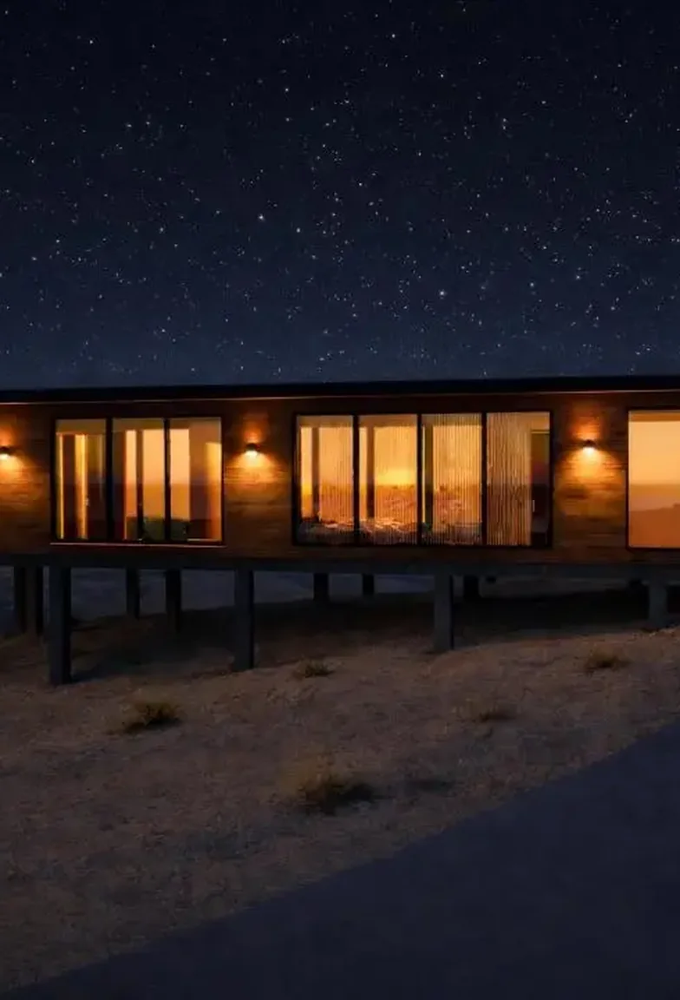

From vision,to model,to permit.
We turn a property and an idea into a home that is resolved on paper, modeled, documented and permitted, before the first shovel hits the ground.



Four things, done in one place.
One studio takes the project from the first massing study to the stamped permit, so nothing is handed over halfway.

Architectural Design
From first massing study to a resolved floor plan, shaped by your lot, your zoning, and how you actually live. Custom homes, hillside and desert estates, additions, casitas, guest houses and site structures.

3D Visualization
You approve the home itself, not a flat line drawing you have to imagine in three dimensions. A full 3D model and photoreal renderings, day and twilight, before a single construction sheet is final.

Construction Documents
The complete coordinated set your builder and your city both need, typically around 22 sheets across roughly six disciplines, drawn to the 2024 IBC, IRC and IECC code cycle.

Permit Stewardship
We do not hand you drawings and disappear. Submittals formatted to each jurisdiction's checklist, plan review comments answered, resubmittals managed until the permit is in hand.
Six moves, in this order.
The studio's own work.


What a permit set looks like.
Four sheets from a real set, laid one over the next in the order they are read.


Every hand-off is a chance for something to be lost.
Most residential projects pass through several hands before a permit is issued.
Quest takes a project the whole way, on one flat fee agreed before we start.
Asked before you ask.
How much does a project cost?
A flat fee agreed up front, based on the scope of your project. One fixed price and a defined timeline, with no hourly surprises.
What is in a construction document set?
Around 22 sheets across roughly six disciplines: cover, site, floor plans, roof plans, elevations, sections and coordinated details, drawn to the 2024 code cycle.
Can you design an ADU, casita or guest house?
Yes. Casitas, accessory dwelling units, guest houses, additions, remodels, RV garages and site structures. What you can build depends on your lot and your zoning.
Why build a 3D model before the drawings?
Because it lets you approve the actual home while changes are still free.